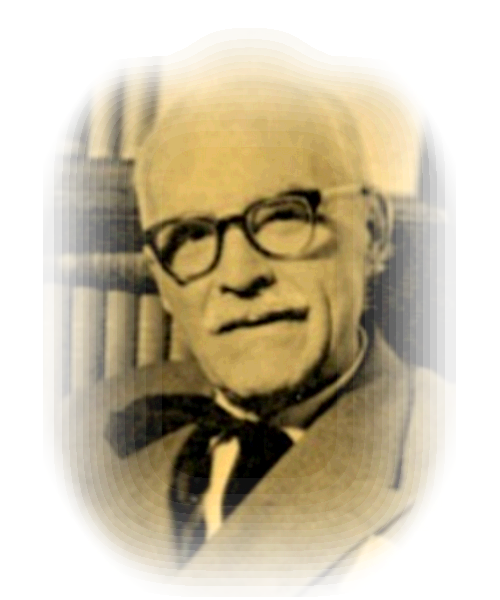

Three Poets

Mai 21, 1880 – Iulie 14, 1967
Stuff about Arghezi.
More stuff.
A fost un scriitor român, cunoscut pentru contribuția sa la dezvoltarea liricii românești sub influența baudelairianismului. Opera sa poetică, de o originalitate exemplară, reprezintă o altă vârstă marcantă a literaturii române. A scris, între altele, teatru, proză (notabile fiind romanele Cimitirul Buna Vestire și Ochii Maicii Domnului), pamflete, precum și literatură pentru copii. A fost printre autorii cei mai contestați din întreaga literatură română. Pseudonimul Arghezi provine, explică însuși scriitorul, din Argesis - vechiul nume al Argeșului. Ovid S. Crohmălniceanu propunea în studiul consacrat operei poetului din Istoria literaturii române între cele două războaie mondiale o altă explicație, pseudonimul ar proveni din unirea numelor a doi celebri eretici, Arie și Geza. Arghezi este unul dintre autorii canonici din literatura română. După o altă ipoteză, numele poate veni de la numele bonei (Ergézi Rozália) care de fapt ar fi adevărata mamă.Even more stuff.
A fost un admirator al simbolismului și a altor curente aparținătoare (cum ar fi Secesiunea vieneză) polemizând în articolele vremii cu George Panu de la Junimea' asupra atitudinii critice a celui din urmă privind Literatura modernistă. La 19 ani a intrat la mănăstirea Cernica, unde a stat patru ani, până în anul 1904. În 1904, a publicat împreună cu Vasile Demetrius o revistă proprie, Linia Dreaptă, care a încetat să mai apară după doar cinci numere.Arghezi, Gala Galaction și Demetrius au fost legați printr-o strânsă prietenie, cum reiese din mărturisirea fiicei lui Demetrius, artista și nuvelista Lucia Demetrius.Yet more stuff. Can you believe it?
S-a reîntors în România în 1910, și a publicat lucrări în Viața Românească, Teatru, Rampa, și în revistele lui N. D. Cocea Facla și Viața Socială, dar și în revista Cronica în colaborare cu Gala Galaction; s-a aflat într-o perioadă în care a avut o activitate literară prolifică, scriind versuri, pamflete politice și articole polemice cu care și-a câștigat notorietatea în cercurile teatrale, politice și literare ale vremii. Cocea a contribuit la succesul lui Arghezi, publicând unul din primele poeme ale poetului, Rugă de seară.© 2010 Nobody at all Contact